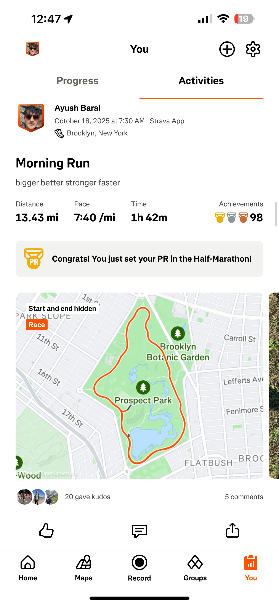

Outside of Data Science
Staying active and creative keeps me grounded — whether I’m running long distances, playing football, hiking in the wilderness, exploring museums, or experimenting with new recipes.

Running

Football

Hiking

Cooking

Museums